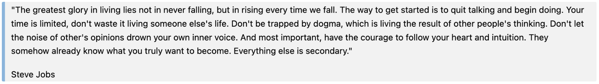

Una cita es una parte de texto que se atribuye a una persona o fuente específica. HTML ofrece varias formas de marcar citas en una página web, utilizando etiquetas específicas para citas cortas y largas.
Citas breves
Para citar una pequeña frase o fragmento dentro de un párrafo, usamos la etiqueta <q> (de "quote" en inglés). Esta etiqueta automáticamente coloca las comillas alrededor del texto que está citando.
Ejemplo:
Citas largas
Cuando quieres citar algo más largo, como un párrafo entero, o incluso varios, usas la etiqueta <blockquote>.
Ejemplo:
